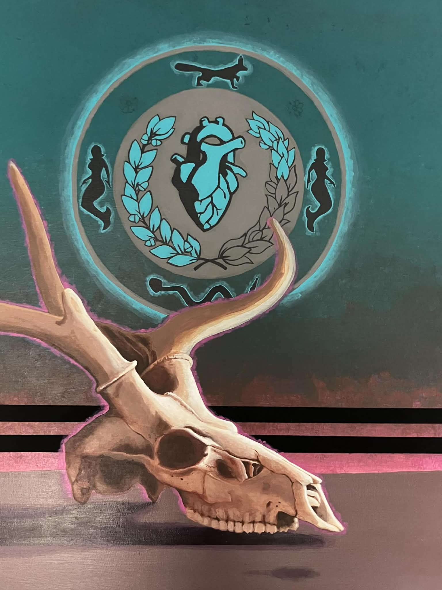
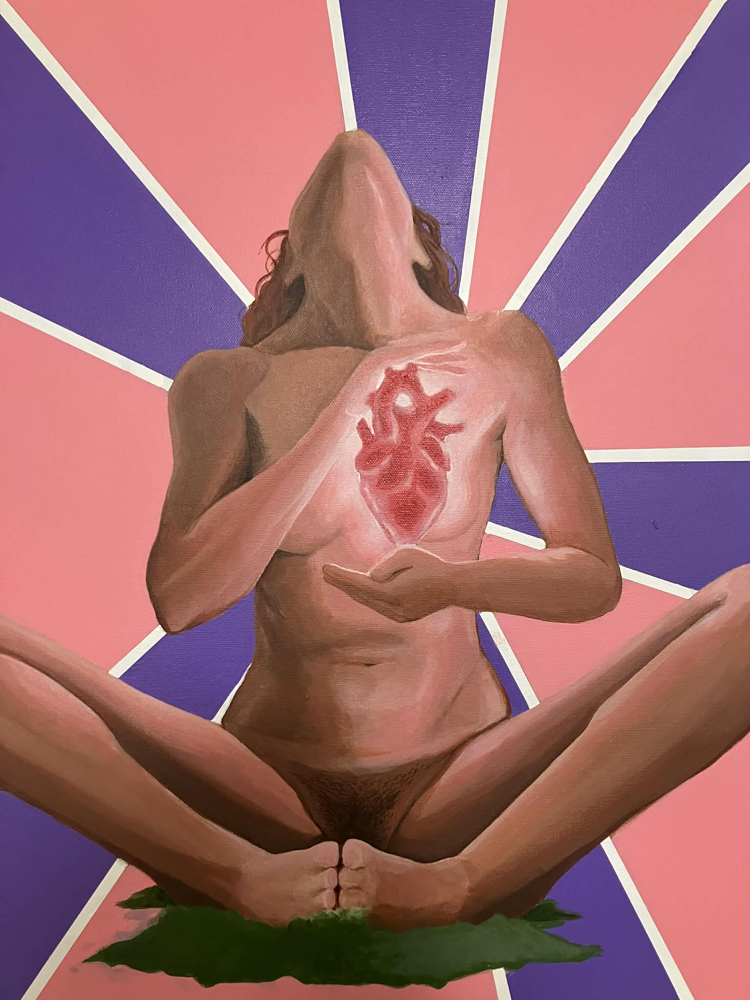
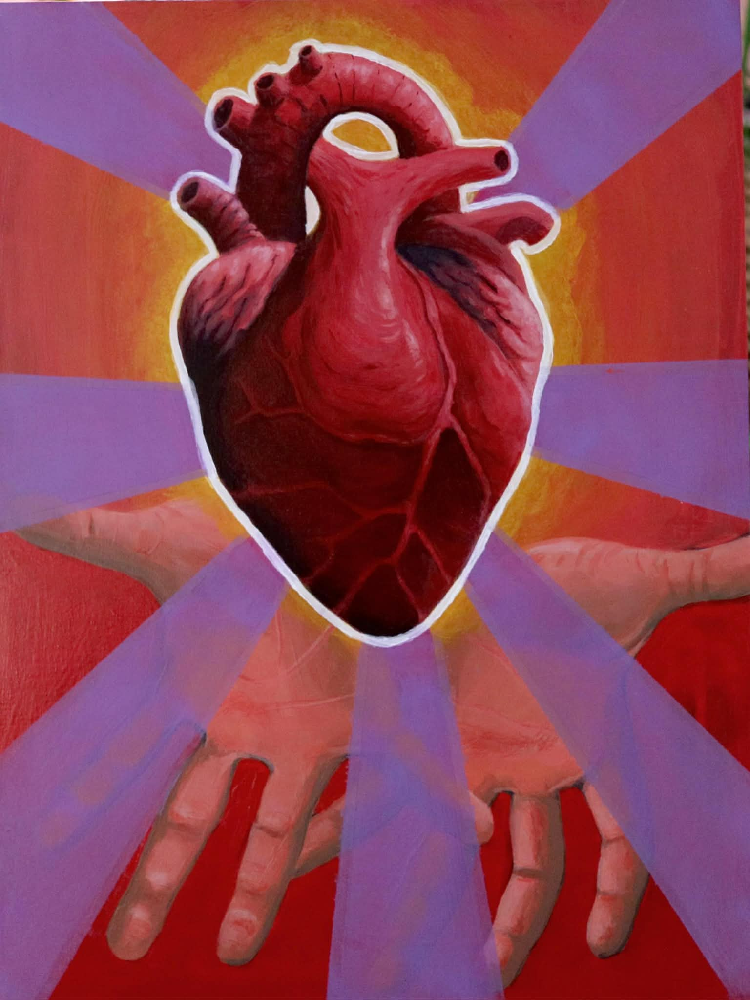
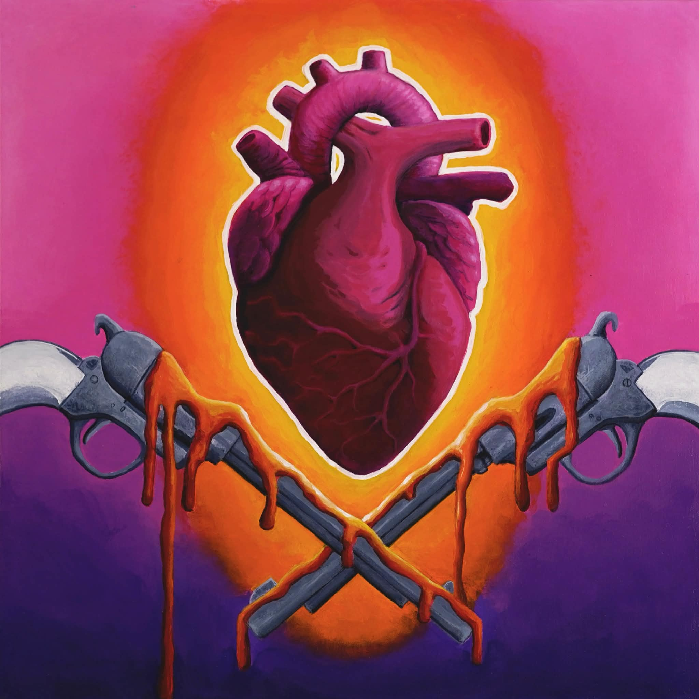

Cycle of the Sacred
Bone returns to earth, and from the earth, the heart persists.
Where nature reclaims, art begins

Bone returns to earth, and from the earth, the heart persists.

Stillness reveals what the body has always carried.

To give the heart is to hold nothing back from the world.

Even among weapons, the heart refuses to harden.
Matt Delcourt paints what happens after we leave.
His work lives in the space between abandonment and renewal — the cracked parking lot split open by a single root, the factory floor softened by decades of moss, the heart that keeps beating long after the body it belonged to has been forgotten.
Across every canvas, the anatomical heart returns. Not as symbol, but as fact: the persistent, stubborn core of something alive inside something left behind. Wreathed in laurel or cradled in open hands, set against radiant fields of magenta, teal, and gold, these hearts are not romantic. They are biological. They are proof.
Nature doesn't mourn what we abandon. It moves in. It takes root in the cracks, climbs the walls, pulls the ceiling down gently over the course of years. Matt's paintings capture that slow, beautiful violence — the moment the vine wins, the moment the concrete gives, the moment the heart outlasts the ruin.
Based in Texas. Working in oils. Watching the walls come down.
"Every abandoned place is a love letter nature hasn't finished writing."
— Matt Delcourt
Interested in a piece, a commission, or a conversation about the walls coming down? Reach out.